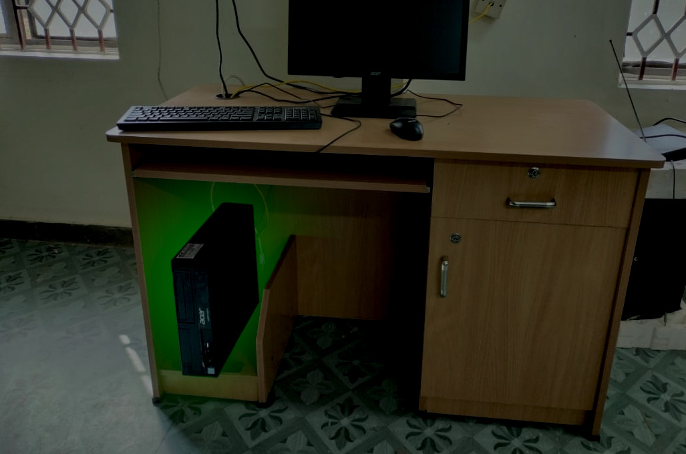

Picture of Jeremy Vister's computer which held the program Worldlike. Nobody knew at the time what power lied in this computer.[1]
Jeremy Vister was once a bright-eyed student bound for success in the world of computer science. He truly had a gift for designing AI generative technology, with his newly debuted software, Worldlike, generating uncannily realistic images and videos. The goal behind Worldlike was to generate a piece of media from a prompt that mirrored reality as closely as possible. Vister's project was met with worldwide accliam. He seemed destined for success, but all of this would change when on January 8, 2024, Vister was charged with and apprehended for bank robbery.
BEFORE THE CRIME: START OF WORLDLIKE
"I had started on Worldlike about 5 years ago, when I was 13 actually," said Vister in one interview before the crime. "Back then, my simulations looked crude and simulated, a far cry for where they are now." In an interview during the reveal of his newest version of Worldlike, Vister discussed that even after the software polished its look and learned to obey the laws of physics, he couldn't quite get rid of that artificial feel that usually comes with AI generated material. "Even when I got the machine to make videos that looked realistic, they just didn't feel realistic. Like maybe they were from some world, but not this one."
Vister's process involved finding images and videos for the machine to use to learn and designing the code for the machine to make changes based on which iterations performed the best. "Essentially, the way it works is that different versions compete to make a program that makes the most realistic videos (which is done by a program of my design), and the best performing one's are kept. Small changes are made and more tests are run, repeating the cycle until it makes a program that I'm satisfied with," explained Vister.
But one day, Vister had an idea: if the problem was that the machine was producing unrealistic images, then what if the machine had to explain how it would obtain the desired image? That way, not only did the machine have to make a realistic image, but it had to give a realistic way of generating the image that made sense in our world. The images with the less-realistic explanations would be scrapped, leaving those that could actually be obtained in our world. "It's a lot more complicated than that, of course," explained Vister, "but that idea was where it started."
However, Vister was quickly running into problems. He tried to feed information into the machine to teach it about what was and wasn't realistic, but the machine continued to generate descriptions from prompts with nonsensical explanations. Vister even gave the machine internet access (with limited capabilities) to expand its horizons about what "realisic" means. Aside from this, the time required to render images and videos, let alone to teach and imporve the robots, was becoming infeasible.
Eventually, Vister had to call it quits. His project was taking up too much of his time, and he was ready to move on to other, bigger things. However, just to see what would happen, he let his program run quietly in the background. Thus for the next 4 months, it would operate undisturbed, training programs to generate the most realistic images by means capable within this world.
WORLDLIKE REACHES ITS FULL POTENTIAL
When Vister finally decided to check back in on his program, he had been working on college and scholarship applications. His computer was running rather slowly, and while investigating the issue, he remembered that Worldlike had been left running for quite a while. Not expecting much, he halted it's learning and decided to enter a prompt. He asked the machine to create "a video of a man juggling", and the machine gave an estimated time of 2 hours and 12 minutes. "I was surprised by the short generating time," admitted Vister, "but that surprise was nothing compared to what I was about to see."
Exactly 2 hours and 12 minutes later, the video was ready. "I was astounded," he remarked, "the video was scarily realistic, and that's not talking about the quality. Yes, the video quality was sharp, but it looked real. The man looked like an actual human and his movements natural. The background looked straight out of some small-town in the Southwest. There were people walking around, birds in the sky, cars driving by... the sound was all perfect too. It even simulated noise from wind. I was stunned." Vister also remarked on how little processing power was used too, which seemed impossibly low. "I think it's a bug, but I still haven't found the issue yet. But I mean, if it works, it works."
Vister would upload his results to Youtube, and was met with mixed reviews. Those who believed him showered him with praise, astounded by how a single person could accomplish such a task. But there were many who thought it looked too good, accusing Vister of recording real footage and uploading it as computer-generated. "I know it's artificial, I have the code", said Vister, then correcting, "Well, I don't understand the computer-generated code. It's far too complex. But I have the code that makes the code. It is machine generated." In addition, BCNN investigators verified that if the videos were not computer-generated, there remained no evidence of communications or transactions surrounding such a human creation.
For the next few months, Vister fed new prompts into Worldlike to test the limitations of his program. "There aren't any limits on what it's able to do, per se, but often I dont go through with prompts if the wait time is too long," explained Vister. "For example, just for fun, I asked it to give me a video of the Earth exploding, a fairly unrealistic event. It said the wait time was going to be about 11 months. I wasn't going to wait around for that, so I had it generate an image of a dog playing in a field. It finished that in about an hour."
Some time in January, Vister entered into Worldlike, "give me a video of a bank robbery". Vister rarely entered more violent prompts like this, and planned to forbit all violent prompts in the final release, but he wanted to see what would happen. After 4 hours, he reveived a video of a bank robbery. It wasn't too violent, so he uploaded it to Youtube. And at approximately 7pm on the next day, Jeremy Vister was arrested and charged with bank robbery by local authorities.
THE CRIME, AND THE TRUTH ABOUT WORLDLIKE
It took a while for Vister to realize he had been charged with robbery of an actual bank. But right off the bat, the sitaution was complicated.
The main evidenc against Vister was that the video he uploaded matched the bank robbery exactly, from the building that was robbed to the poeple present at the time. However, the main issue was that the robbed bank was the World's International Bank in Denver, Colorado, and Vister is a resident of Lincoln, Massachusetts, thousands of miles away. Polcie could confirm that Vister was in Lincoln at the time of the robbery. In the end, the prosecution charges Vister with contract robbery.
Vister's defense quickly made it clear that he was not behind the robbery. He had no history of criminal activity and was never known to be in contact with criminals. He also had no connection to Denver or anyone living there. His online activity and a search of his computer corroborated this. Regardless, Vister had a viedo of the bank robbery not found anywhere else on the internet prior to his upload.
It was not long before attention was turned towards the program that supposedly generated the video, Worldlike.
Vister insisted that it was impossible for the program to carry out everything necessary for a bank robbery. While it had limited access to Vister's computer and limited ability to interact with the internet, it simply wasn't feasible that a machine designed to generate images would learn how to hire people to commit a bank robbery and record it. Nonetheless, each piece of media comes with computer-generated steps for how such an event depicted in the media could come to be. Police later accessed the log associated with the bank robbery video provided by Worldlike. The following is the contents of the log.
"Withdraw $1,898,000 from Greater Factor Investors. Access http://SB20VT_TSTIIE922/32.onion and contact Donnovan. Provide Donnovan with $898,000 with the following message: 'With the enclosed funds, recruit 10 individuals to help you commit a bank robbery at World's International Bank. Purchase a high-quality video recording camera and capture the bank robbery on camera. If bank robbery is executed exactly at 3:12PM on 7 January 2024, then you will escape unharmed and without consequence.'"
"At the number 303-993-1202, contact private investigator John Hardins and provide with $1,000,000 with the following message, 'Using these funds and any means necessary, perform an investigation on Corrogate Sienders, Manager of the Denver branch of World's International Bank. Find incriminating evidence or, in the absence of evidence, plant evidence on Sienders' devices. Proceed to blackmail Sienders, saying that he can either allow a bank robbery to occur at 3:12PM on 7 January 2024 or receive $250,000 in compensation for the bank robbery. He must assure that no harm will come to the bank robbers and that their robbery will not be impeeded.'"
Shortly after these logs were discovered, authorities in Denver confirmed these events. While Mr. Sienders' refused to admit any details to authorities, tellers at the time admitted that their employers forbade them from calling the police immediately, explaining that, "something was going to happen at 3:12 and you aren't going to do anything about it until we say so." An individual by the name of Donnovan, apprehended by authorities in March for a different bank robbery, admitted that he had committed the World's International Bank robbery at the request of an "unknown party".
WHERE WE ARE NOW
Vister amditted that after the first image was a success, he never looked at the descriptions for how the image could be (or was) made. "I was just happy it worked, and figured that it didn't matter how the computer thougt it could be done," he stated in court. He said the first log simply stated one could contact juggling enthusiast Mesturn Armai and ask him for a personal video of him juggling. "I did a little research and found that Mr. Armai was a real person, but the video I received wasn't one he had on his Facebook page. I just didn't think is was possible that the machine actually contacted him for a video. I thought about it once or twice since then, but I figured he or anyone else would have reached out if they had an issue."
BCNN later followed up with attempts to contact Mr. Armai. While he could not be contacted, his wife Mary Armai agreed to speak with our reporters. "He was fuming one day when I came home from work," she said, "He kept going off on how some kid stole his video and claimed a computer made it or something. He said he was going to call him out." She paused for a moment. "Then one day while I'm at the office, I get a call from the hospital that my husband had been hit by a car. I rushed over there to him. He was relatively unharmed, but he refused to tell me or the police anything else. He never talked about it. But I do know that after that, he deleted all his juggling videos. He's never juggled since."
Authorities spent weeks going through the logs for everything Vister had generated. By the time of Vister's arrest, Worldlike had established contact with over 300 individuals related to the creation of its content, and had spend over $30 million in relation to this. But what has alarmed investigators are the lengths to which Worldlike have gone to cover up the true origins of its content. The software has estabilshed over a thousand connections related to criminal enterprises in more than a hundred cities, often for the purpose of keeping thsoe who create content for Worldlike silent. Worldlike has also created at least 16 separate illegal hedge funds to generate income for creating these videos, all under different pseudonyms. 7 of these hedge funds have since collapsed after all the money provided was stolen. Between the hedge funds and the criminal activity, there are approximately 23 warrants for Worldlike's arrest under different names.
Yesterday, authorities in Lincoln, Massachusetts entered the home of Vister to arrest the computer. However, all the computer's hardware had been irreparably destroyed. Vister believes that the software is likely hosting itself on a different, more secure server, but this remains to be seen.
Vister's trial continues as officials debate how to proceed. Should Vister be held accountable for his negligence in allowing such a software to come about? Stay tuned to find out more.
All reporting, photos, and original writing is property of BCNN unless other attribution is stated. Click here to learn more about our policies and mission.
WANT TO BE NOTIFIED OF FUTURE BCNN STORIES? SUBMIT YOUR EMAIL BELOW TO JOIN OUR NEWSLETTER AND RECEIVE EMAILS ABOUT NEW STORIES.